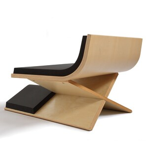
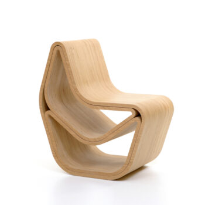

Renommierte Werke
C.H.A.I.R
"Chairs have an interesting Rythm" war die Debut Schreinerarbeit der Splinter Bee's.
Die Handgemachte Sitzgelegenheit war die erste unter vielen in der Serie "36 Chairs"
Hive
Der Stuhl "Hive" soll nach eigenen Aussagen das Schwarm-Gefüge der Splinter Bee's verkörpern.
Das Design stammt vom verstorbenen ODB und wurde von Method Man in 3 Monaten fertig gestellt